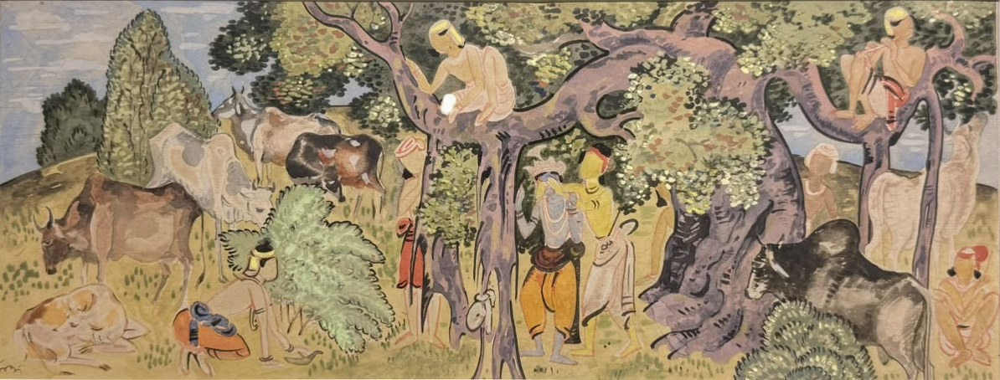
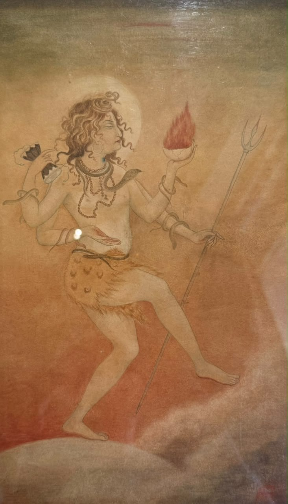
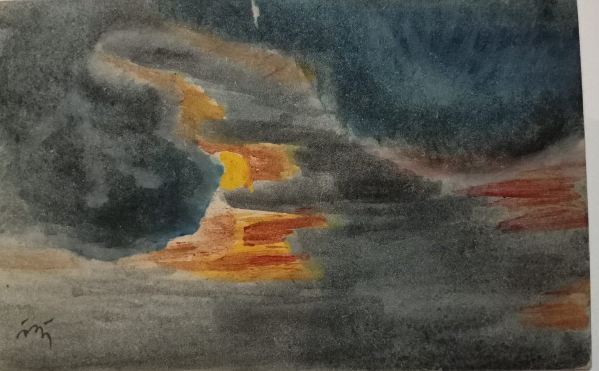
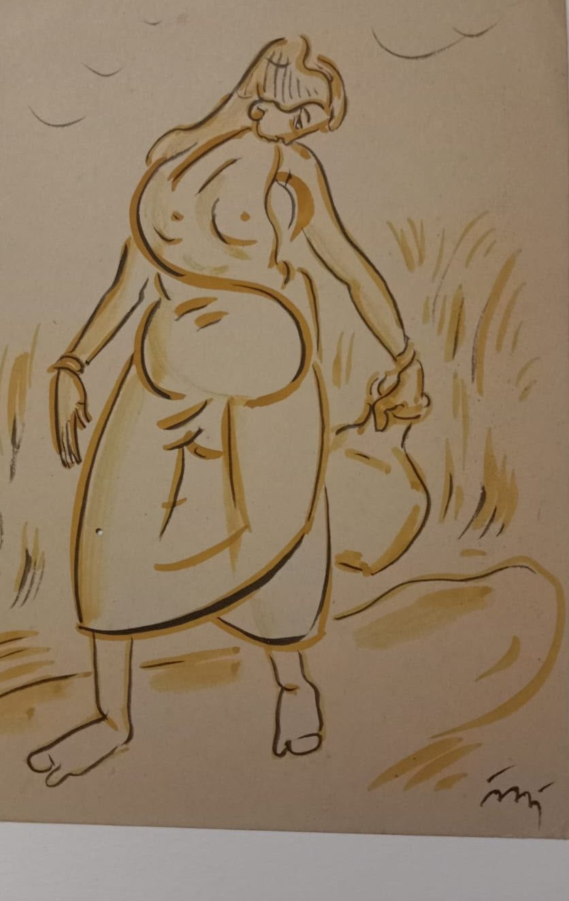

Opening 1 December 2026 · South Delhi
Walk into the story of Bengal art
A house devoted to the Bengal School and the art of Santiniketan: its masters, its murals, and what it still teaches.
Begin the story
The thread
Walk the whole story- 1905Abanindranath paints Bharat Mata
- 1919Kala Bhavana begins at Santiniketan
- 1921Rabindranath Tagore founds Visva-Bharati
- 1922Nandalal Bose leads Kala Bhavana
- 1938Ramkinkar Baij's Santhal Family, in the open air
- 1946Benode Behari Mukherjee's mural at Hindi Bhavana
- 2023Santiniketan becomes a World Heritage Site
- 2026House of Legends opens in South Delhi
Swipe along the thread

Bharat Mata, 1905
Watercolour on paper
Chapter one · Past
How it began
In Calcutta in 1905, Abanindranath Tagore painted a quiet figure in saffron, and Indian painting turned back toward its own traditions.
His brother Gaganendranath and a circle of young artists turned with him. Within fifteen years, Rabindranath Tagore had given that turn a school of its own at Santiniketan, and Nandalal Bose, Abanindranath's student, would come to lead it.
Read how it beganChapter two · Present
The works as they survive
Tempera and wash, woodcut and linocut, sculpture in laterite and cement. We show each work the way a museum would: with its wall label, its maker and its story.

[Title], [year]
[Medium] / [size]

[Title], [year]
[Medium] / [size]

[Title], [year]
[Medium] / [size]
Chapter three · Future
What Santiniketan still teaches
Draw from life, from craft and from the land around you. Kala Bhavana's lessons are still being taught, and from 1 December 2026 we will add our own voice to them.
The masters
The people who made it
 Rabindranath Tagore1861–1941Founded Visva-Bharati, and began to paint in his sixties.
Rabindranath Tagore1861–1941Founded Visva-Bharati, and began to paint in his sixties.
 Abanindranath Tagore1871–1951Founder of the Bengal School, and Nandalal Bose's teacher.
Abanindranath Tagore1871–1951Founder of the Bengal School, and Nandalal Bose's teacher.
 Nandalal Bose1882–1966Shaped Kala Bhavana, and painted its walls with his students.
Nandalal Bose1882–1966Shaped Kala Bhavana, and painted its walls with his students.

Ramkinkar Baij1906–1980Made sculpture from Santiniketan's own earth, and left it in the open air. Benode Behari Mukherjee1904–1980Painted the walls of Santiniketan, and kept working after he lost his sight.
Benode Behari Mukherjee1904–1980Painted the walls of Santiniketan, and kept working after he lost his sight.
Archival photographs to come, with permission from the right holders.
From the journal
How to look at a Santiniketan mural
At Santiniketan, murals were painted on the walls people lived and studied beside. Here is what to look for when you stand in front of one.
Read the story
Visit the house
Come and see them in person
We open on 1 December 2026 at [Gallery address], South Delhi. Come for an hour, or ask us for a quiet viewing of a single work.